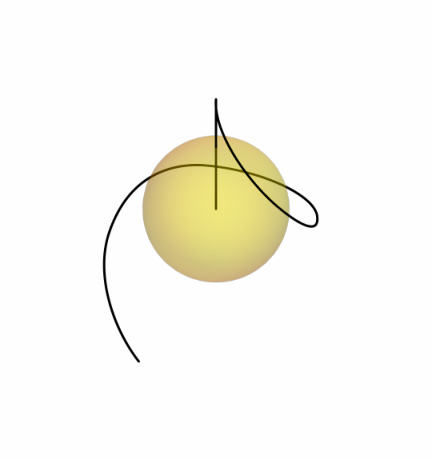

Proof and More Variations of Bellman's Lost-in-a-forest Problem
Bellman's lost-in-a-forest problem asks for the shortest path guaranteed to escape a forest of known shape when the hiker's starting position and orientation are unknown. The authors' earlier computational framework reduced it to a traveling salesman problem with neighborhoods (TSPN) but lacked proofs of equivalence and convergence.
The problem is restated as a rigid-motion boundary-intersection problem. Its discretization is shown to reduce to TSPN, and discrete global optima are shown to converge to the continuous optimum. The framework is extended to searching for two lines, a translation-only weak form linked to Wetzel's unit arc covering problem, closed paths, and three dimensions. Theorems 1-7 are formalized in Lean 4 using Mathlib in an appendix.
The paper proves equivalence and convergence and gives numerical path lengths for two-line searches and closed-path variants across many angles. It also compares 1D, 2D and 3D variants, including a reproduced 3D curve whose convex hull contains the unit ball.

| Angle | Arc+Tangent | 2 segments | 3 segments | 4 segments |
|---|---|---|---|---|
| 0° | 1.62782 | 1.66509 | 1.63224 | 1.63224 |
| 90° | 2.41322 | 2.12132 | 2.12132 | 2.12132 |
| 180° | 3.19862 | - | 4.34784 | 3.59635 |